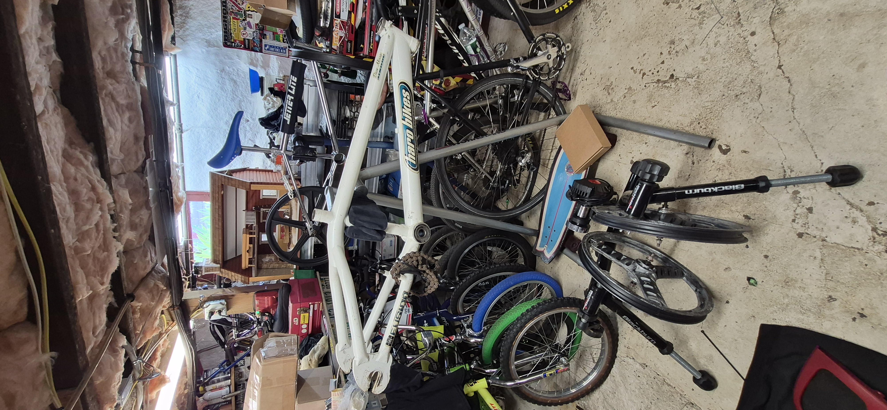

The BMX Basement
Built under a 1900 house, hidden behind doors, stairs, bulkhead entrances, old tools, survivor bikes, lowriders, parts drawers, stickers, chrome baths, and questionable promises that this is definitely “the last bike.”
The Stairs
Every bike that comes down these stairs gets judged before the kickstand touches concrete.
The Bulkhead
The emergency delivery route for bikes that absolutely were not supposed to come home today.
The Chrome Corner
Where rusty parts go into the sink and come back acting like they still have factory paperwork.
The Parts Graveyard
Mystery stems, oddball bolts, tires, pads, grips, and one washer Joey swears matters.
The Survivor Row
Sometimes the scratches ARE the story.
The Back Room
Nobody really knows what is back there. Pete says he does. Nobody believes Pete.
Current Basement Artifact

Recovered from the basement pile and pulled onto the stand for investigation: a signed Dave Mirra Haro frame still carrying the scars of another lifetime.
The medical board left its mark. The shop signs stayed in evidence. The frame came home rough, honest, and exactly the way basement bikes usually do.
One part survivor bike. One part time capsule.